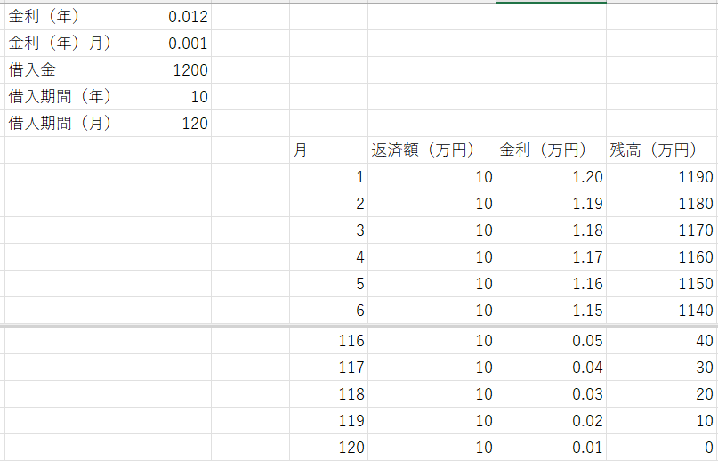

ローン計算-01
研究とは直接関係ない話ですが，ふと思い立ってローン計算を考えて見ることにしました．
昔，どこかのサイトか本で計算方法を見た記憶があるのですが，今検索してもヒットしなかったので自分で計算してみました．
ローンには二種類あり，
元金均等 ： 毎月の一定返済額 + 金利
元利均等 ： 毎月の一定返済額（金利を含む）
があるようです．
計算自体は，元金均等，が単純です．
計算に必要な情報は，
借入金
金利
返済期間
です．
・金利
一般的には年の金利が表示されていますが，一般的には毎月返却することになるので年金利の1/12の月ごとの金利が計算には使われます．
とりあえず，簡単に，
金利（年）：ｋ
金利（月）：ｘ (=k/12)
としましょう．
・返済期間
これも一般的には，何年？，を指しますが，これも月ごとの計算なので，
返済期間（年）：y
返済期間（月）：ｍ (=year/12)
としましょう．
また，計算を簡単にするために，
ボーナス払いは考慮しない
金利の変更も考慮しない
とします．
まずは，
・元金均等
毎月の返済額は，借入金を月数で割ったものですから，
\( \Large \frac{s}{m} \)
となります．
一ヶ月目
最初の返済時の金利は，借入金×金利（月）となるので，
\( \Large s \cdot x \)
となります．その時点での残金は，
\( \Large s = \frac{s}{m} = s \left( 1-\frac{1}{m} \right) \)
となります．
二ヶ月目
毎月の返済額は変わらないので，
\( \Large \frac{s}{m} \)
しかし，金利はすでに一ヶ月分返済しているので少し借入金が減っているので，
\( \Large s \cdot \left( 1-\frac{1}{m} \right) \cdot x \)
となります．その時点での残金は，2回ぶん返済したので，
\( \Large s = \frac{s}{m} = s \left( 1-\frac{2}{m} \right) \)
となります．
三ヶ月目
毎月の返済額は変わらないので，
\( \Large \frac{s}{m} \)
しかし，金利はすでに二ヶ月分返済しているので少し借入金が減っているので，
\( \Large s \cdot \left( 1-\frac{2}{m} \right) \cdot x \)
となります．その時点での残金は，3回ぶん返済したので，
\( \Large s = \frac{s}{m} = s \left( 1-\frac{3}{m} \right) \)
となります．つまり，
nヶ月目
毎月の返済額は変わらないので，
\( \Large \frac{s}{m} \)
しかし，金利はすでにnヶ月分返済しているので少し借入金が減っているので，
\( \Large s \cdot \left( 1-\frac{n-1}{m} \right) \cdot x \)
となります．その時点での残金は，n回ぶん返済したので，
\( \Large s = \frac{s}{m} = s \left( 1-\frac{n}{m} \right) \)
となります．
実際の計算
実査に計算してみましょう．
金利（年）：1.2％ (=0.1%/month)
借入金：1200万円
期間（年）：10年 (=120ヶ月）
として計算してみると，

となり，こちら，で計算した結果と一致します．
．
次のページに元利均等の計算結果を示します．